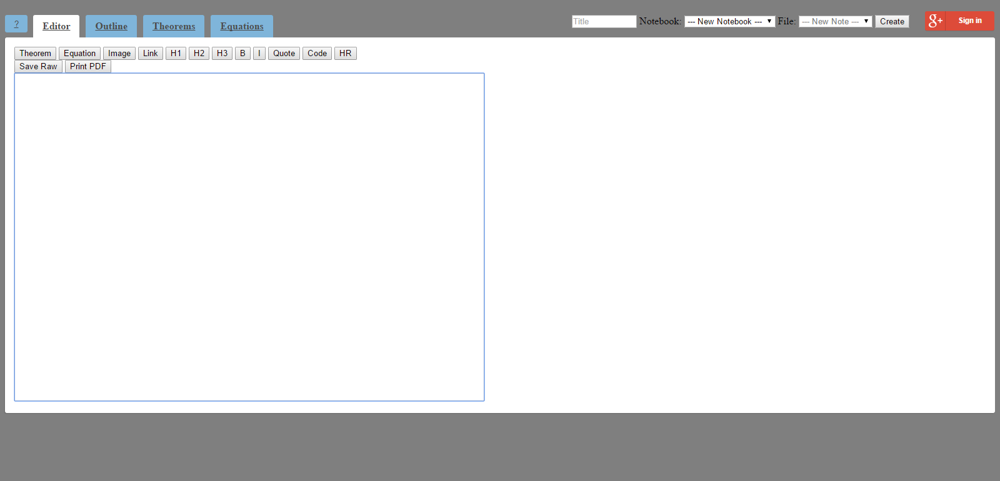

an\note

an\note is a web application designed to help students take interactive notes on a web-based platform. Pieces of notes can be tagged as theorems or equations, and header levels can be specified. After the notes are finished, the equations and theorems can be viewed separately from the other notes, allowing for easy studying. The header levels are used to generate an outline of the notes to keep the user's notes organized.
This application was developed during Big Red Hacks in the Fall of 2014. The team was composed of four Cornell students, including Harrison Goldstein.
an\note has not been altered since the hack-a-thon, but plans to improve the application for public use have been discussed.
Click here to view an\note in action.